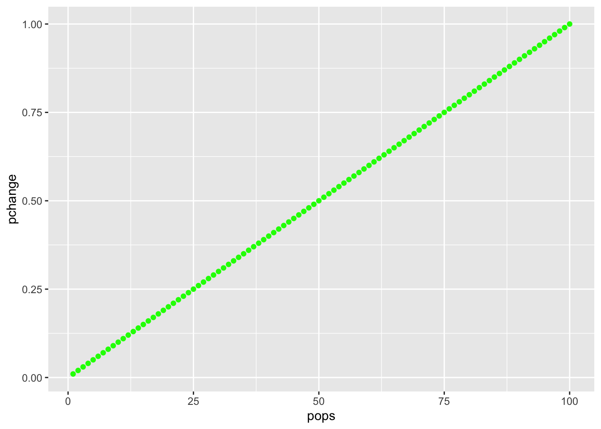
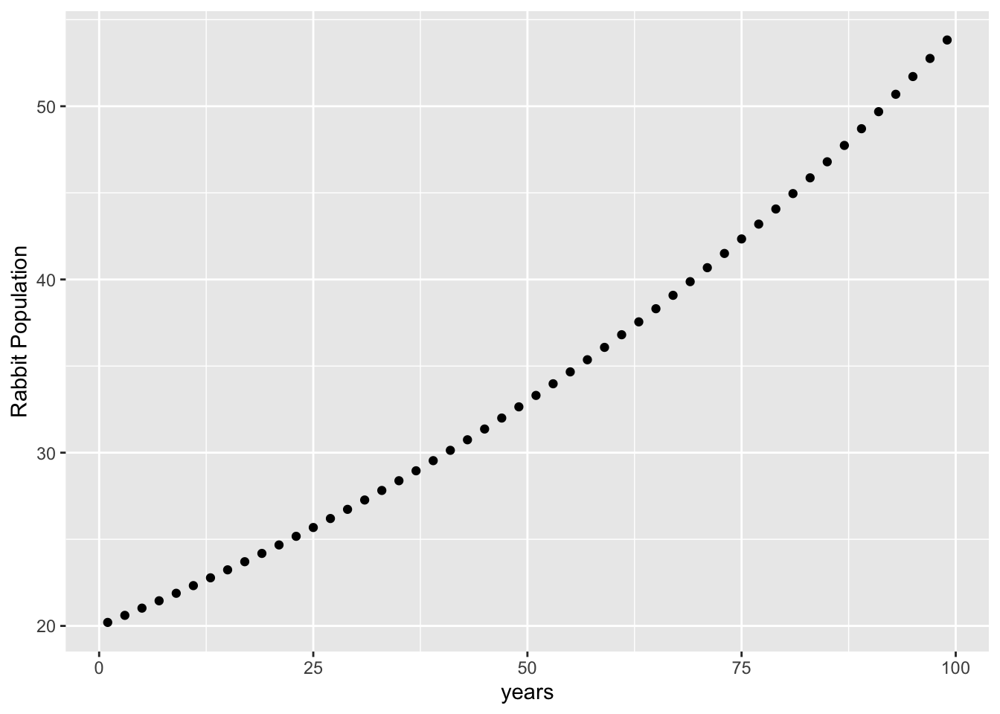
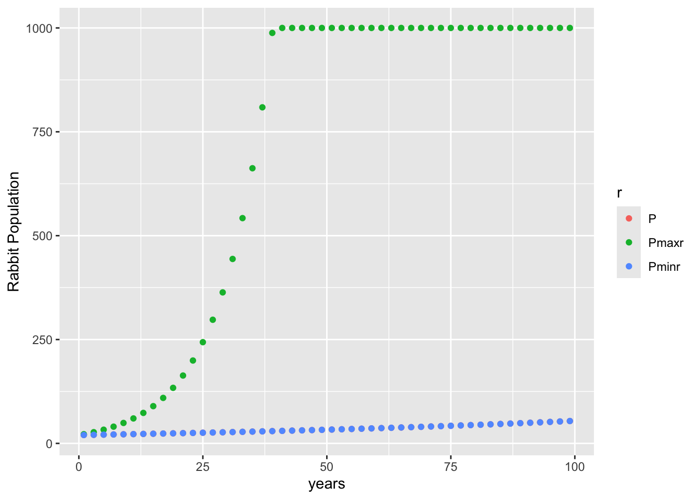
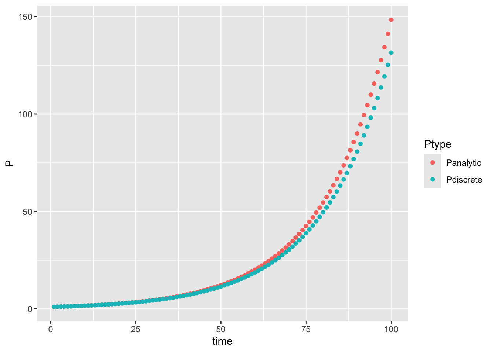
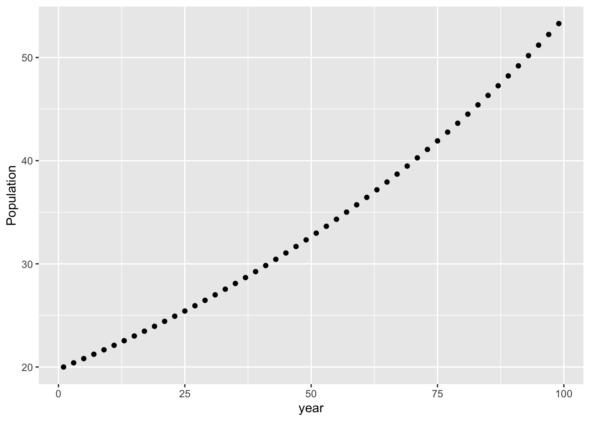

Dynamic models always involves derivatives (equations that express how things change from time step to time step or place to place )
Implement population growth as a derivative - a model of population change
# note that we include time here but we don't use it; we will need this latersource(here("R/dexppop.R"))# see how it worksdexppop(P =20, r =0.01)
[[1]]
[1] 0.2
# what is this?# notices this is the same asdexppop(t =100, P =20, r =0.01)
[[1]]
[1] 0.2
# lets look at this for a range of initial populationspops <-seq(from =1, to =100)tmp <- pops %>%map(~dexppop(time =0, r =0.01, P = .x))pchange <-unlist(tmp)pdyn <-data.frame(pops, pchange)ggplot(pdyn, aes(pops, pchange)) +geom_point(col ="green", size =1.5)

# why is this a straight line?# how many new individuals are born at each population level# try this - add a carrying capacity (dP/dt = 0 if P > carryingcapacity)
Integration
What if we wanted to look at population in 20 years given an initial condition
Two options
explicit solution to differential equation is known; e.g. you can integrate both sides of the equation! Not always possible but lets look at a case where it is possible
must be solved by iteration; this is what we do when we can’t integrate both sides
Explicit Solution is available
source(here("R/exppopK.R"))# gives population after any time given an initial population# 20 rabbits, growth rate of 0.01 how many in 30 yearsexppopK(T =30, P0 =20, r =0.01, K =1000)
[1] 26.99718
# if we want to see how population evolves over time - generate a time series by running our model for each point in timeinitialrabbits <-20years <-seq(from =1, to =100, by =2)Ptime <- years %>%map_dbl(~exppopK(P0 = initialrabbits, r =0.01, K =1000, T = .x))# keep track of what times we ranPtime <-data.frame(P = Ptime, years = years)ggplot(Ptime, aes(years, P)) +geom_point() +labs(x ="years", y ="Rabbit Population")

# try generating results for maximum and minimum possible r values to compare (guess at what you think)max_r <-0.1min_r <-0.01K <-1000tmp <- years %>%map_dbl(~exppopK(r = max_r, P0 = initialrabbits, K = K, T = .x))Ptime$Pmaxr <- tmptmp <- years %>%map_dbl(~exppopK(r = min_r, P0 = initialrabbits, K = K, T = .x))Ptime$Pminr <- tmphead(Ptime)
Ptimep <- Ptime %>%gather(key ="r", value ="P", -years)ggplot(Ptimep, aes(years, P, col = r)) +geom_point() +labs(x ="years", y ="Rabbit Population")

# notice how populatin becomes unstable for high growth rates!
Solving by thinking of problem as a difference equations
Population models can be discrete (rather than continuous)
So we could implement them as difference equations and iterate
source(here("R/discrete_logistic_popK.R"))# notice how a for loop is used to iterate# how many rabbits after 50 years given a growth of 0.1# starting with 1 rabbit - but a carrying capcity of 500discrete_logistic_pop
function (P0, r, K, T = 10)
{
pop <- P0
for (i in 1:T) {
pop <- pop + r * pop
pop <- ifelse(pop > K, K, pop)
}
return(pop)
}
discrete_logistic_pop(P0 =1, r =0.05, K =200, T =50)
[1] 11.4674
# save resultsdiscrete_result <-discrete_logistic_pop(P0 =1, r =0.05, K =200, T =50)# lets also keep the parameters for use laterP0 <-1r <-0.05K <-200T <-50
Compare discrete and analytic results
Save the results from both to compare
source(here("R/exppopK.R"))exppopK(P0 = P0, r = r, K = K, T = T)
[1] 12.18249
analytic_result <-exppopK(P0 = P0, r = r, K = K, T = T)analytic_result
[1] 12.18249
discrete_result
[1] 11.4674
# why are they different# look at trajectoriesgrowth_result <-data.frame(time =seq(from =1, to =100))growth_result$Panalytic <- growth_result$time %>%map_dbl(~exppopK(P0 =1, r =0.05, K =200, T = .x))growth_result$Pdiscrete <- growth_result$time %>%map_dbl(~discrete_logistic_pop(P0 =1, r =0.05, K =200, T = .x))tmp <- growth_result %>%gather(key ="Ptype", value ="P", -time)ggplot(tmp, aes(time, P, col = Ptype)) +geom_point()

# try running them for longer time periods to see what happens# change the value of r, K , P0 - see how it effects the results
Notes: - not exactly the same graph - analytically solution is better (more-correct; don’t have to iterate) - differential equation change in time is infinitely small - discrete have to iterate to get to a point in time - plus some time step (not infinitely small) - time increment will affect how quickly updated
Ways to minimize rounding error: - solvers: integrate by iteration - i.e. ODE (ordinary differential equations) - only works with single independent variable like time (/dt) - space AND time is different
ODE example
source(here("R/dexppop.R"))dexppop
function (time, P, r)
{
dexpop = r * P
return(list(dexpop))
}
library(deSolve)initialrabbits <-20years <-seq(from =1, to =100, by =2)# run the solverPtime <-ode(y = initialrabbits, times = years, func = dexppop, parms =c(0.01))head(Ptime)
colnames(Ptime) <-c("year", "P")# notice that there are additional pieces of information year, including the method used for integrationattributes(Ptime)
$dim
[1] 50 2
$dimnames
$dimnames[[1]]
NULL
$dimnames[[2]]
[1] "year" "P"
$istate
[1] 2 52 105 NA 6 6 0 36 21 NA NA NA NA 0 1 1 NA NA NA
[20] NA NA
$rstate
[1] 2.00000 2.00000 99.98839 0.00000 1.00000
$lengthvar
[1] 1
$class
[1] "deSolve" "matrix"
$type
[1] "lsoda"
# this also means you need to extract just the data frame for plottingggplot(as.data.frame(Ptime), aes(year, P)) +geom_point() +labs(y ="Population", "years")

# this also works (of course function can be by order)Ptime <-ode(initialrabbits, years, dexppop, 0.03)colnames(Ptime) <-c("year", "P")ggplot(as.data.frame(Ptime), aes(year, P)) +geom_point() +labs(y ="Population", "years")